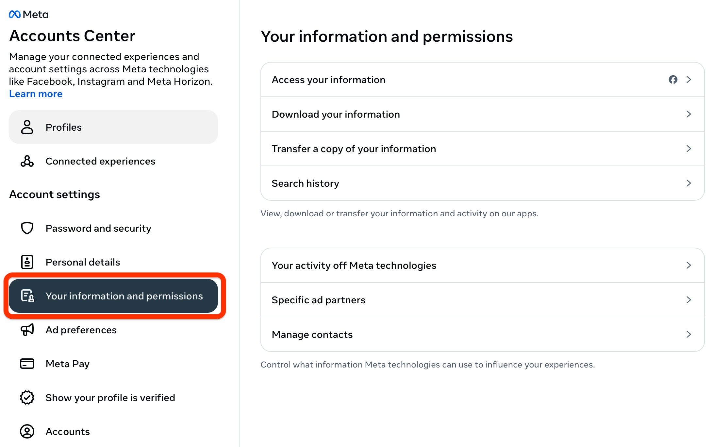
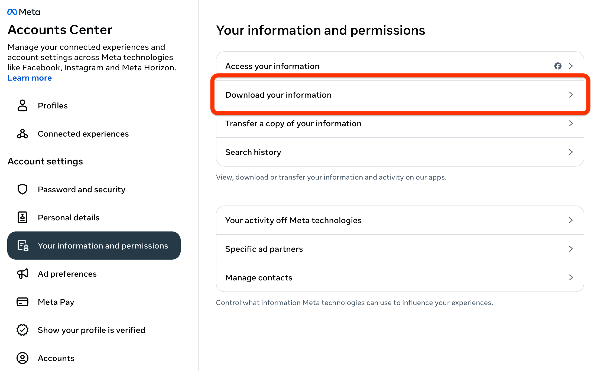
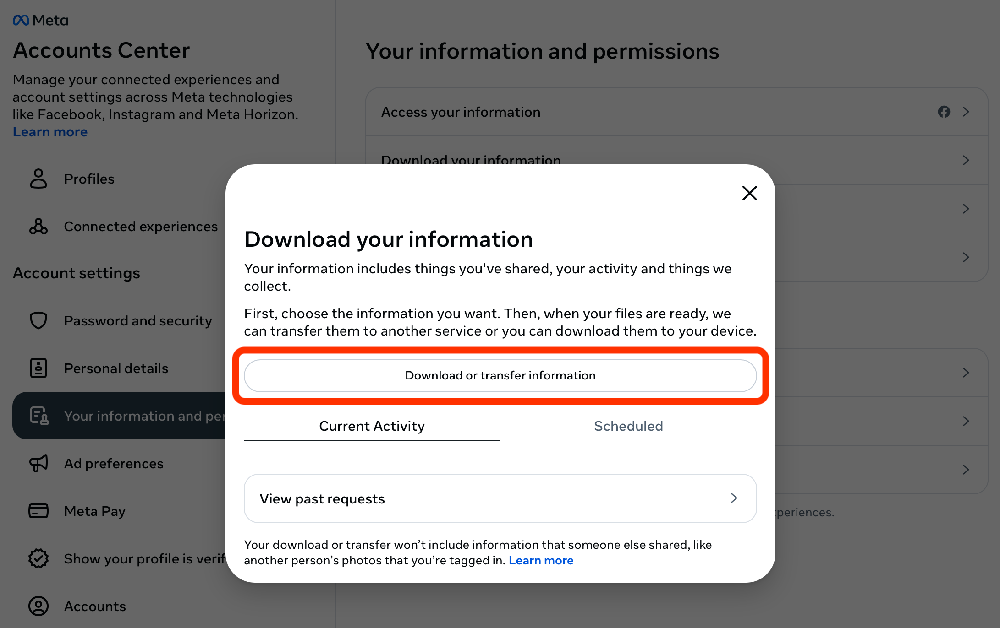
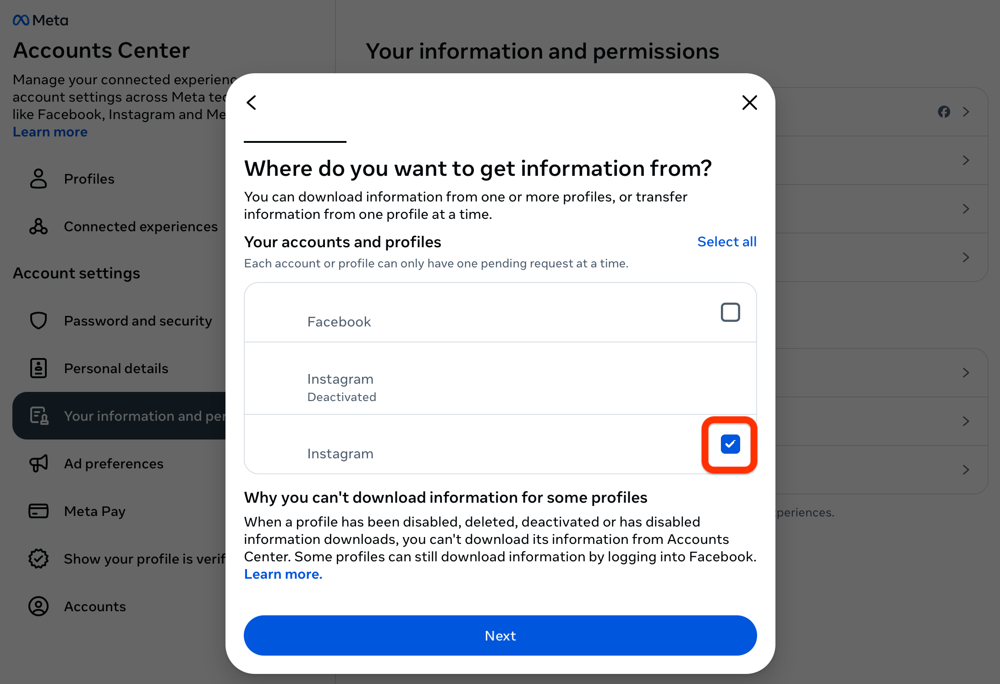
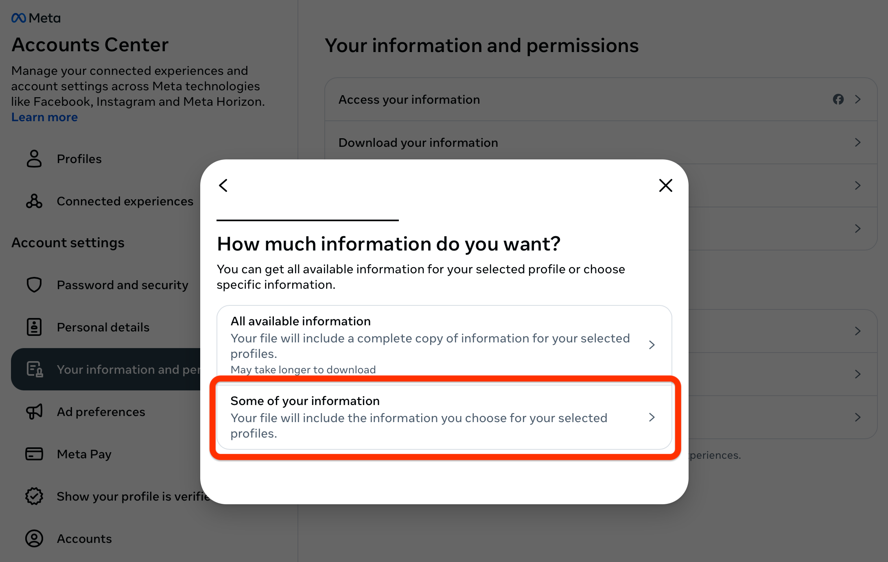
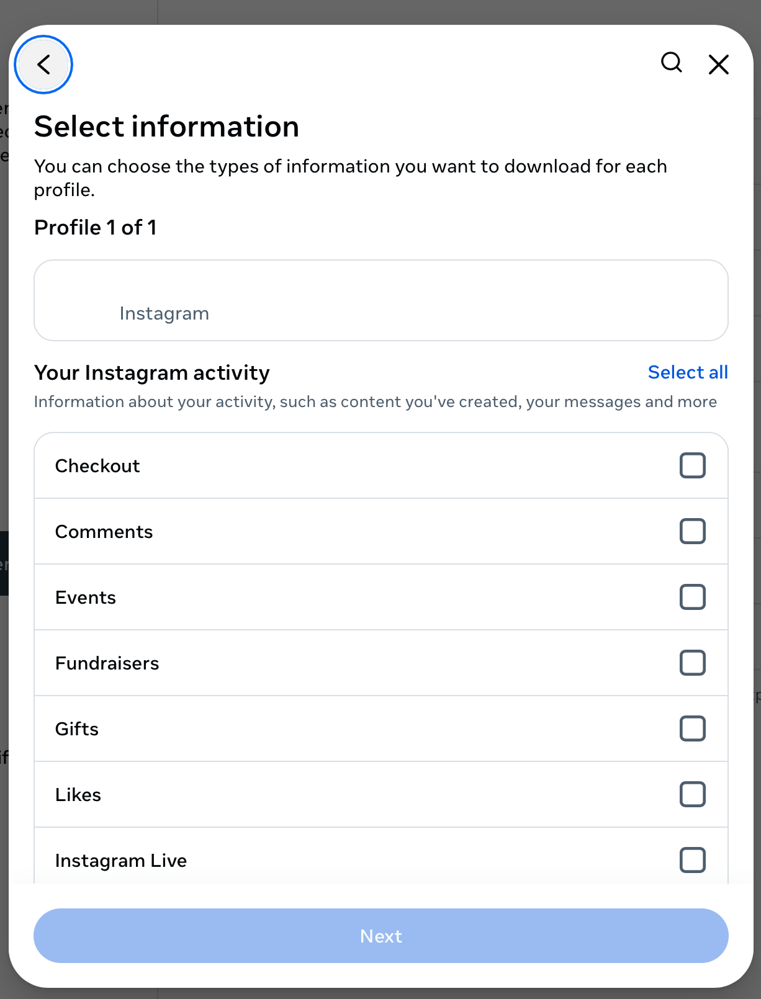
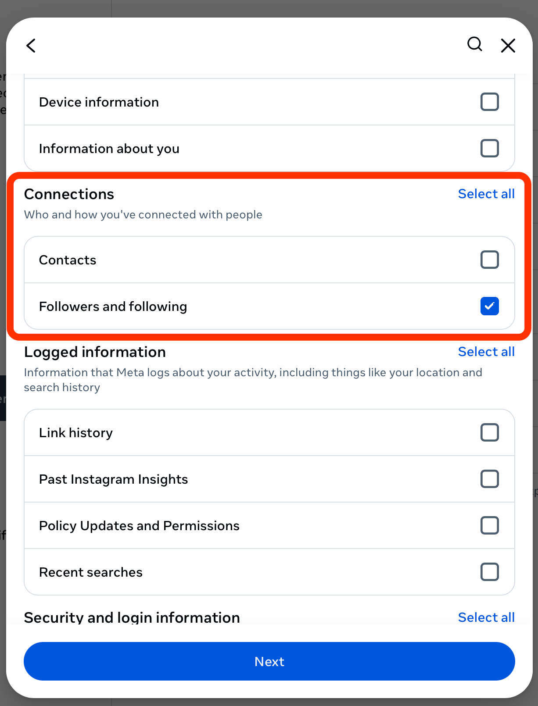
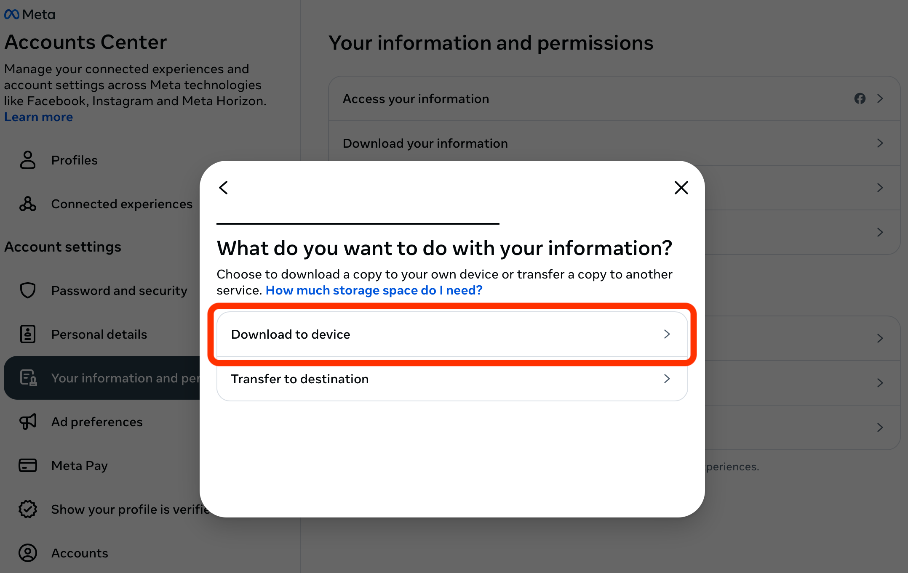
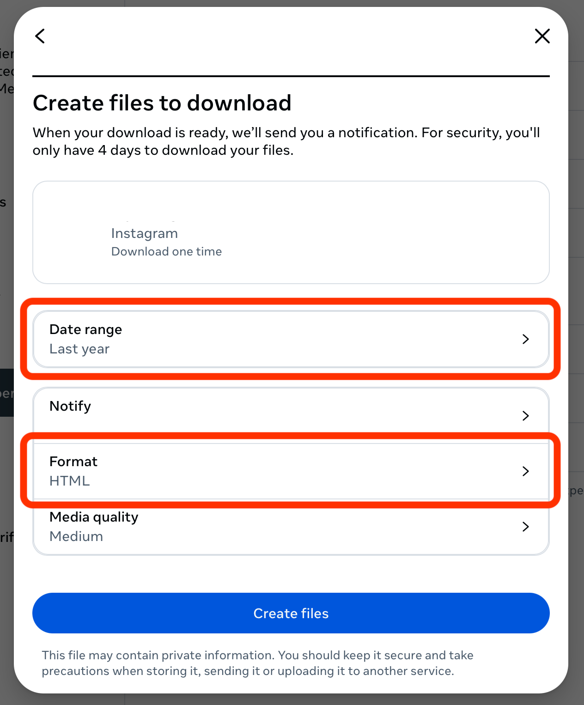
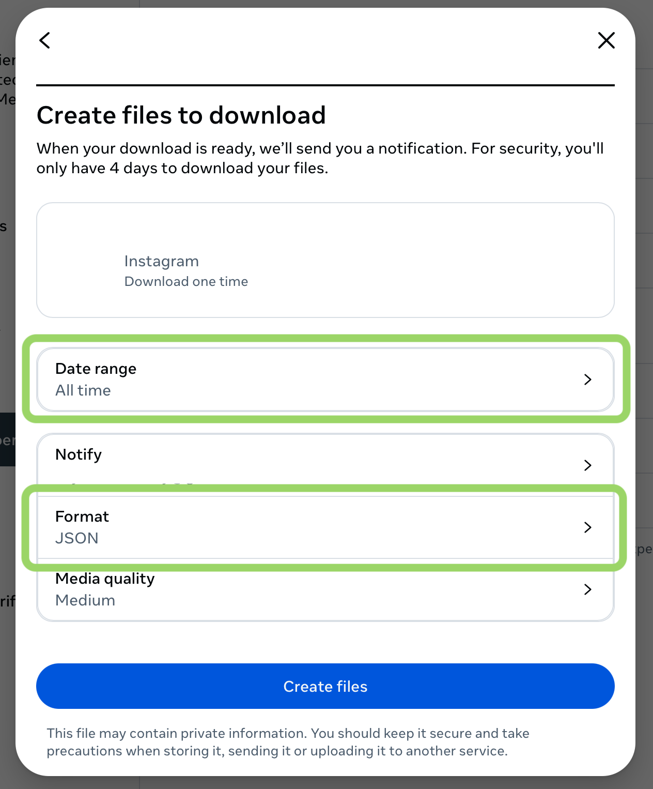

Programatic fetching of data costs money, so to keep this service free, here is how to download your data yourself!
Obtaining your data:
- Login to your instagram account via the Meta
Account Center.
-
Select Your information and permissions in the Account settings menu to the left of the screen.

-
Select Download your information from the menu on the Your information and permissions page.

-
In the pop-up menu, select Download or transfer information

-
Select the Instagram account you would like to process and click Next.

-
To avoid long download and processing time, select Some of your information

-
On the Select information screen, scroll down to the Connections section,
select Followers and following, and click Next.


-
Select the Download to device option.

-
To specify your download information:
- Change the Date range from Last year to All time and click Save.
- Change the Format from HTML to JSON and click Save
NOTE: This program does not process HTML files, so make sure you change the format to JSON!!!


- Select Create files and download when the files are ready.
Upload the folder(s) and I'll handle the rest!
Uploading your files:
-
If you are a first time user and do not have a 'before' folder:
- The downloaded folder should be named connections by default. Rename your downloaded folder to before.
- Do not upload a 'Before Folder'. Upload your folder to 'After Folder' and click Submit.
- You will only be provided with a list of users that you are following and are not following you back.
- To see which users have unfollowed you, complete steps 1-10 again after you notice a change in follower count.
If you are a returning user and do have a 'before' folder:
- Complete steps 1-10 to obtain a new set of data and rename your newly downloaded folder to after.
- Upload your 'Before' and 'After' folders in their respective places and click Submit.
- Make sure you are uploading the older data into 'Before Folder' and the newer data into 'After Folder'
to ensure proper data processing.
- You will now be able to see an updated list of users not following you back as well as a list of users that
have unfollowed you since the last time you retrieved data.